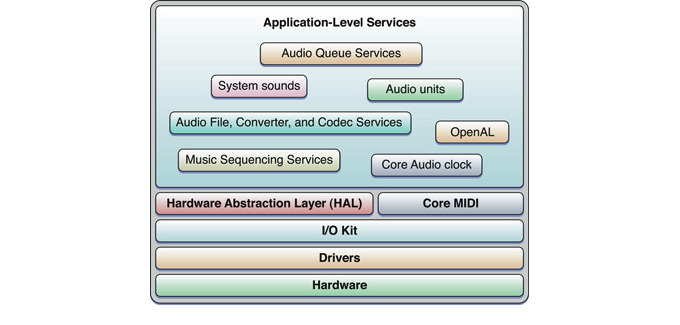

|
|
Getting Started with AudioTechnology OverviewCore Audio provides world-class support for adding audio features to your application, scaling to meet a wide range of needs:
The Core Audio architecture in Mac OS X includes a wide range of application-level services. These services cooperate with the underlying technology layers, exposing features you need while taking care of low-level complexities.  You may also want to learn about the audio capabilities provided by QuickTime, particularly for cross-platform development, as described in Getting Started with QuickTime. Start HereBefore you develop an application that uses Mac OS X audio technologies, become familiar with them by reading:
Choose a Learning PathYou select among the various Mac OS X audio APIs based on your development language and on the needs of your application. Playing and Synchronizing AudioIf you are a Carbon, Cocoa, or UNIX developer creating an application for Mac OS X v10.5 or later, use Audio Queue Services for audio playback and synchronization. Read Audio Queue Services Programming Guide to learn how to use this technology. To support previous versions of Mac OS X, use QuickTime for basic audio playback. Consult QuickTime Audio. If you are developing a Cocoa application that needs to play only uncompressed audio data, read Sound Programming Topics for Cocoa. Recording AudioTo add recording capability to any application for Mac OS X v10.5 or later, use Audio Queue Services. Read Audio Queue Services Programming Guide to learn how to record linear PCM or compressed audio. To support previous versions of Mac OS X, use the interfaces in the Audio File and Converter Services framework, as described in Core Audio Overview. Parsing Streamed AudioTo parse an audio file stream, use Audio File Stream Services, part of the Audio Toolbox framework. Read Audio File Stream Services Reference and Audio File Services Reference, which describe the C interfaces you need. Audio File Stream Services is available in Mac OS X v10.5 and later. Adding Digital Signal Processing or Audio SynthesisTo add flexible digital signal processing or MIDI-controlled audio synthesis to an application, use audio units. Audio units are plug-ins that let you provide enhancements to applications such as Logic Pro and GarageBand. You can also use audio units to build audio features into your own application. With audio units, you can develop effects such as filtering and reverb, MIDI-based music synthesis, audio data format conversions, mixing, panning, sound generation and playback, and more. Read Audio Unit Programming Guide, which provides conceptual information and a tutorial. The Core Audio SDK includes a variety of Xcode projects to get you started. If you are targeting your audio unit for use in an Apple Pro application such as Logic Pro, review Audio Unit Developer Guidelines (PDF) for tips and best practices information. Supporting MIDIIf you plan to support MIDI interfacing, to play MIDI data, or to record incoming MIDI data, read Core MIDI Services and MIDI Server Services in Core Audio Overview. Look at MIDI File Format to learn how to use MIDI data in QuickTime. Supporting Surround SoundIf you want to perform spatial manipulation of sound in your application, especially if you are a games developer, use the Mac OS X OpenAL framework. Learn more about OpenAL on the OpenAL website. Starting in Mac OS X v10.5, the AU Lab application (Apple’s reference audio unit host) supports surround sound. AU Lab is included with Xcode Tools, available on the Mac OS X installation DVD. Mac OS X v10.5 also includes a set of surround-sound enabled “panner” audio units. Use these facilities for working with and testing surround sound. Playing Alerts and User Interface SoundsIf you are a Carbon, Cocoa, or UNIX developer creating an application for Mac OS X v10.5 or later, use the interfaces in the For earlier versions of Mac OS X, use the interfaces in the Supporting Audio Hardware and Disc RecordingIf you are a hardware vendor, you may need to supply drivers to allow your product to interact with Mac OS X applications. Core Audio supports driver development. Consult Audio Device Driver Programming Guide to learn how to develop drivers for Mac OS X. You may also want to read Getting Started with Hardware and Drivers. If your application offers disc recording capability, refer to Disc Recording Framework Reference and Disc Recording UI Framework Reference for comprehensive descriptions of these interfaces. Next StepsThe Audio Reference Library includes the following resource pages, which can be bookmarked for easy access:
|
© 2004, 2007 Apple Inc. All Rights Reserved. (Last updated: 2007-10-31)
|